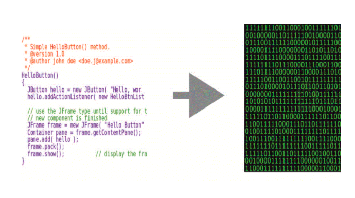

Le langage artificiel est produit dans un but bien précis et il n’est pas verbal, ce langage est difficile pour nous les humains à comprendre et à véhiculer. c’est un ensemble de signes, de caractères, de mots, de chiffres suivant une sémantique, une grammaire et une règle bien définis. le langage va subir une transformation jusqu'à à être des séquence de 0 et 1 (bit) afin d’être exécuté par la machine.
